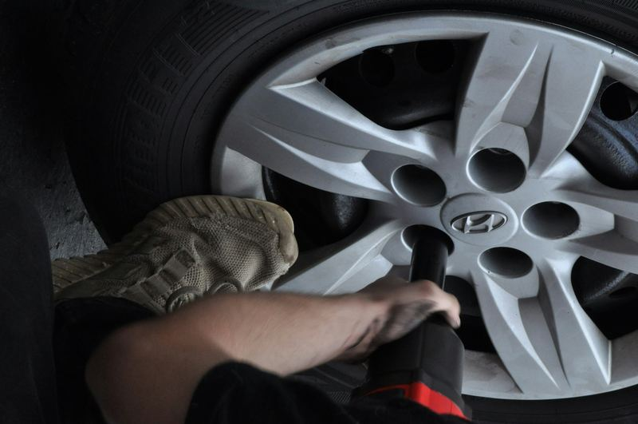
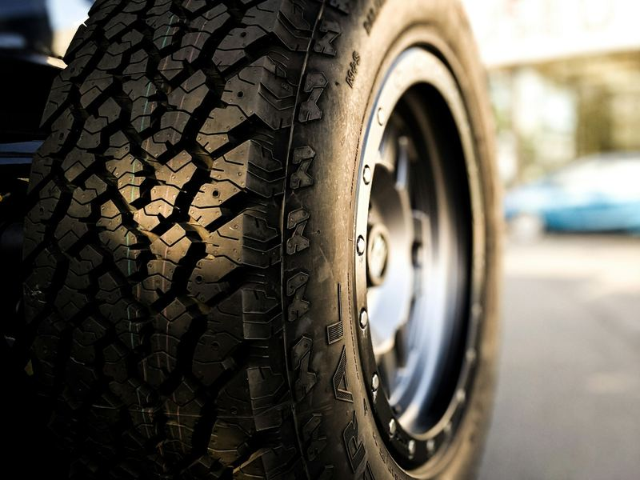
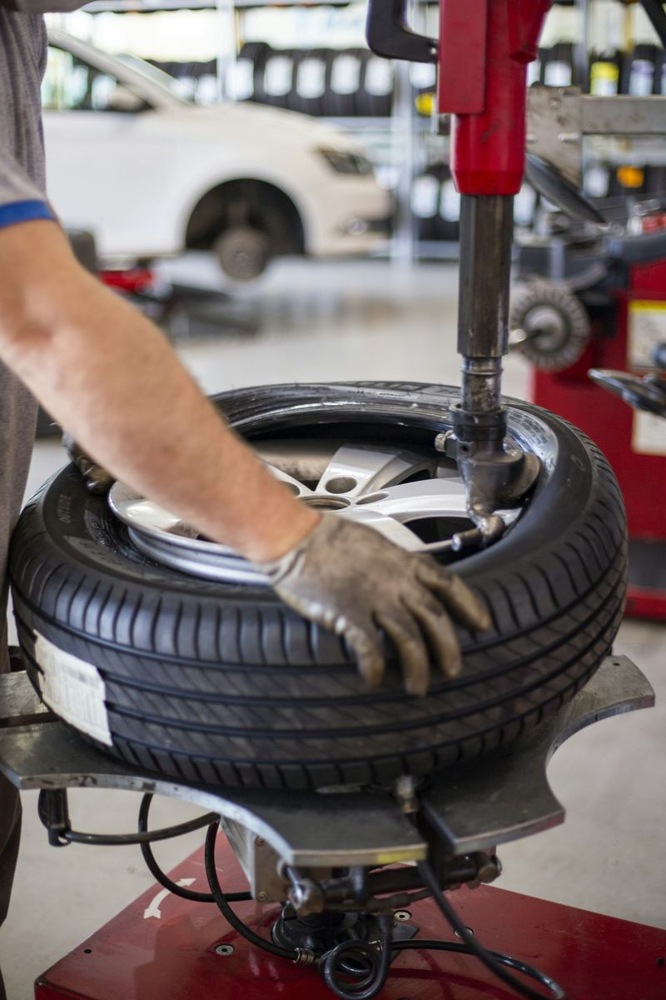

Přezutí pneumatik a kol
Letní na zimní a zpátky, pneumatiky i kompletní kola.
Pneuservis Borýsek v Bernarticích nad Odrou. Přezutí pneumatik i celých kol, vyvážení, opravy defektů a běžný servis. Otevřeno ve všední dny od 16 do 19.
Po–pá 16–19

Změřte hloubku dezénu (stačí mince nebo pravítko) a posuňte jezdec. Řekneme, jestli je to ještě podle zákona.
V pořádku
Objednat přezutíZavolejte a domluvte si čas, ať nečekáte.
Letní na zimní a zpátky, pneumatiky i kompletní kola.

Aby se volant netřásl a pneumatiky se sjížděly rovnoměrně.

Oprava defektu a drobné opravy, se kterými nemusíte do velkého servisu.
„Super servis. Ještě existují poctiví a levní odborníci. Děkuji.“
zákazník na Firmy.cz